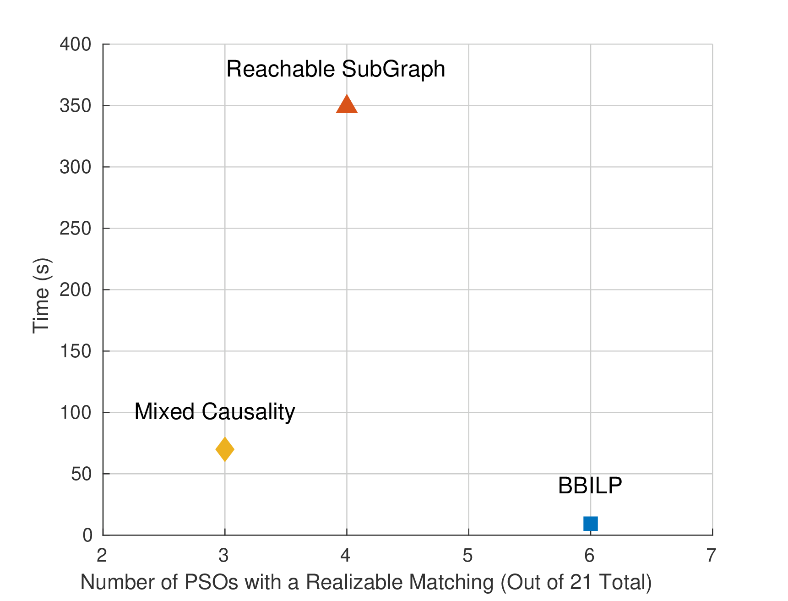

Comparison Between Matching Algorithms¶
In the previous demo, Branch-and-Bound ILP Matching Calculation Cost, Branch and Bound ILP (BBILP) was compared to the basic Exhaustive search for valid matchings. In this demo, we shall compare BBILP with two other state-of-the-art matching algorithms.
The Contestants¶
BBILP¶
This algorithm has been presented extendedly in Branch-and-Bound ILP Matching Calculation Cost and will not be further explained.
Reachable Subgraph¶
This algorithm revolves around the idea of a reachable subgraph, one whose variables can always participate in a realizable matching. In other words, all complete matchings on the reachable subgraph are also realizable matchings. This subgraph is generated through recursive pruning of the initial graph, based on which variables of the over-constrained graph are reachable from causal matchings.
On this, hopefully much more confined and smaller subgraph, an Exhaustive matching search is carried out. This approach was first presented in the publication “V. Flaugergues, V. Cocquempot, M. Bayart, and M. Pengov, “Structural Analysis for FDI: a modified, invertibility-based canonical decomposition,””
In practice, this approach does not work as well, because it cannot include non-invertible edges in algebraic loops, leading to poorer detectability performance. Additionally, it cannot discriminate whether an integration/differentiation is performed inside or outside of a dynamic system (ODE or DAE).
Mixed Causality Matching¶
On the other hand, the Mixed Causality algorithm (from “C. Svard and M. Nyberg, “Residual Generators for Fault Diagnosis Using Computation Sequences With Mixed Causality Applied to Automotive Systems,”” is able to identify dynamic systems and allow/disallow integrations accordingly. However, it cannot to the same for non-invertible edges.
Comparison Procedure¶
This demonstration uses the demo script matching_comparison.m, which:
- Selects the benchmark model, a fixed-wing UAV from “Fravolini, M., Campa, G., & Napolitano, M. (2008)”, and builds its structural model
- Extracts the PSO set from the model
- Searches for valid residual generators for each one, once for each matching methodology, while timing the procedure
Running the Test Script¶
Simply execute the matching_comparison.m script, located in the Demos folder. It will take about 7 minutes to finish, depending on your machine.
Before discussing the results, let’s go over some key areas of the script:
% Select the models to test
modelArray{end+1} = g005b(); % UAV model described in Fravolini, M., Campa, G., & Napolitano, M. (2008).
% Define the matching method set to test
matchMethodSet = {'BBILP','Flaugergues','Mixed'};
The model under examination is set to g005b, whose equations are:
The set of matching algorithms to be run are appended in the matchMethodSet array.
%% Perform Structural Analsysis and Matching, extract residual generators
SA_results = structural_analysis(model, SA_settings);
As before, the structural analysis procedure is performed, within a loop which selects a different matching procedure each time. 21 PSOs are found and are forwarded for matching.
m = matchings_this_pso{j};
gi.applyMatching(m);
equIds = gi.getEquations(m);
varIds = graphInitial.getVariablesUnknown(equIds);
if length(varIds)~=length(equIds)
continue;
end
gi.createAdjacency();
adjacency = gi.adjacency;
numVars = gi.adjacency.numVars;
numEqs = gi.adjacency.numEqs;
validator = Validator(adjacency.BD, adjacency.BD_types, numVars, numEqs);
offendingEdges = validator.isValid();
After each method has produced a matching set for each PSO, the matching set is examined for realizability. Afterwards it is applied on the PSO. Afterwards, it is examined if it is complete. Finally, the validator object is used to verify that:
- No open-loop integrations take place
- No open-loop non-invertible evaluations take place
- No differentiations are applied inside dynamic systems
If all of the above constraints are satisfied, then a matching can actually be implemented as a residual generator function. Still, one should be careful that even though the residual generator population procedure can be automated, symbolic algebra libraries may fail to instantiate some well-posed evaluations.
Results¶
Let us take an overall view on the results, as presented by the following figure:
On the horizontal axis is the number of PSOs (out of the 21 total) for which a realizable matching was actually found by each corresponding algorithm. It turns out that it is impossible to find realizable matchings for all of the PSOs of the model.
On the vertical axis is the elapsed time of each algorithm.
Our BBILP methodology managed to produce the largest amount of realizable matchings. In fact, this is the maximum feasible number, because BBILP has the same, maximum scope over the candidate matching sets, similar to Exhaustive search. Additionally, it is the fastest, taking 9.3 seconds.
Next, the Mixed Causality methodology managed to find only 3 realizable matchings. It didn’t manage to find the realizable matchings for the other 3 PSOs where such a matching existed because it couldn’t acknowledge that the matchings it produced were in fact not realizable. It required 70 seconds.
Finally, the Reachable Subgraph approach managed to find 4 realizable matchings but required 349 seconds.
To provide an example on why the other two methodologies failed to find realizable matchings for all 6 PSOs, consider the an example from this same model. The Reachable Subgraph method produced a matching implying a residual generator, part of which was:

Essentially, (\(e_{14}\)) was chosen to be solved for \(V\) in a back-substitution chain, which is not realizable; the denominator of (\(e_{14}\)) is very likely to become 0 for a combination of (\(M\), \(\alpha\), \(\delta_e\)) within the flight envelope of the UAV. For that reason, the edge \(\overrightarrow{(V, e_{14})}\) had been marked as non-invertible in the initial Structural Graph.
Instead, our BBILP algorithm chooses a matching where \(V\) is a state variable for the DAE underlying the residual, using (\(e_{1}\)) to calculate its derivative and then integrate it. This results in a realizable residual.